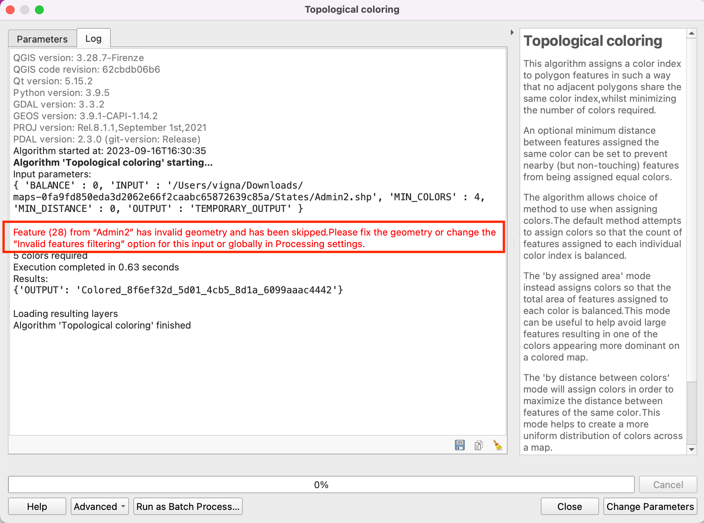
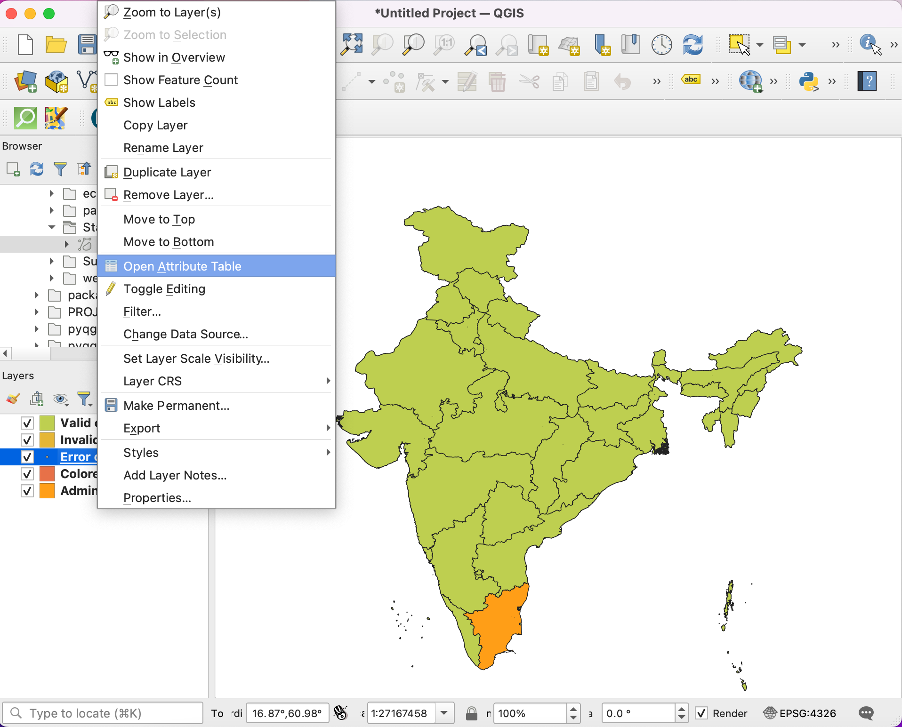
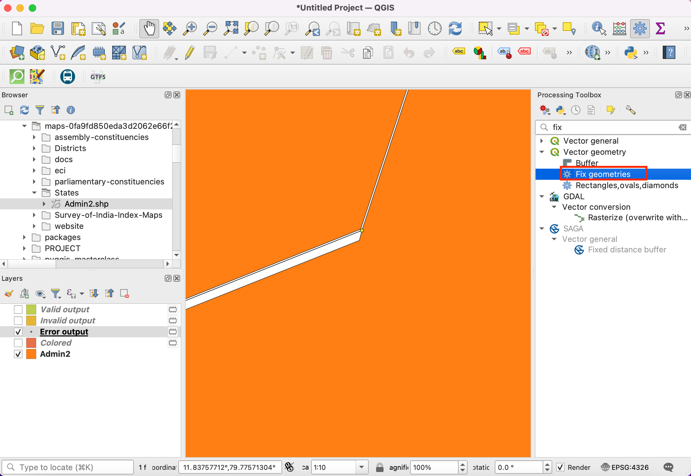
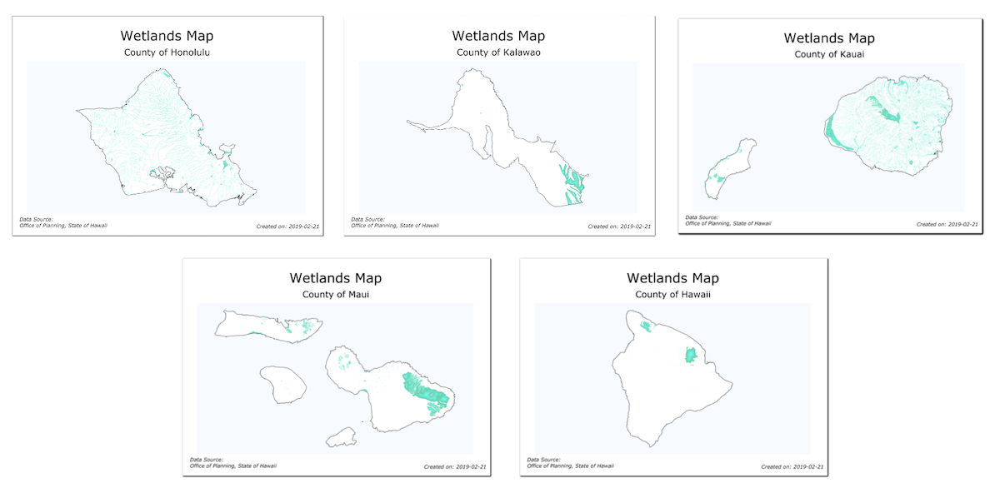

Ustvarjanje karte (QGIS3)¶
Pogosto moramo ustvariti karto za tisk ali objavo. QGIS ima vgrajeno dokaj zmogljivo orodje, ki se imenuje Print Layout in omogoča ustvarjanje kart iz podatkovnih slojev GIS.
Pregled naloge¶
V vadnici bomo ustvarili karto Japonske s standardnimi elementi kot so pomanjšana karta, mreža, oznaka za sever, merilo in druge oznake.
Česa se bomo še naučili¶
Kako pregledati in spremeniti spremenljivke oziroma nastavitve projekta QGIS
Kako uporabljati izraze v QGISu
Pridobivanje podatkov¶
Uporabili bomo podatkovno zbirko Natural Earth - bolj natančno Natural Earth Quick Start Kit, ki že vsebuje lepo oblikovane globalne podatkovne sloje in je pripravljena za uporabo v programu QGIS.
Prenesite Natural Earth Quickstart Kit. Če povezava za prenos ne deluje, ga dobite neposredno s strani Natural Earth Downloads.
Vir podatkov [NATURALEARTH]
Postopek¶
Prenesite in razširite podatke Natural Earth Quick Start Kit. Odprite QGIS. Poiščite mapo
Natural Earth quick startv Browser nadzorni plošči. Razširite mapo in poiščite projektNatural_Earth_quick_start_for_QGIS_v3. Ta je projektna datoteka, ki vsebuje sloje v obliki QGIS dokumentov. Dvakrat kliknite projekt, da ga odprete.

Opomba
If you get a pop-up dialog named Handle Unavailable Layers, click the Auto-Find button followed by Apply Changes to fix the error.
If your map is in your preferred language, you can proceed to Step 4. If not, you can change the language of the labels. This project uses variables to set the language. We can change the variables by going to .

Opomba
Projektne spremenljivke so odličen način za shranjevanje nastavitev, ki jih lahko nato uporabimo povsod, kjer QGIS omogoča delo s spremenljivkami. Projekt Natural_Earth_quick_start_for_QGIS_v3 ima že nastavljenih veliko spremenljivk, ki jih uporabljamo za oblikovanje v tem projektu.
Preklopite na zavihek Variables v pogovornem oknu Project Properties. Poiščite spremenljivko
project_languagein klliknite Value stolpec, da pričnete z urejanjem. Spremenite jezik vname_enin kliknite OK.

Ko se vrnete v glavno okno programa QGIS, kliknite gumb Refresh v Map Navigation Toolbar. Karto boste zdaj videli prikazano z angleškimi oznakami.

Uporabite gumbe za pomikanje in povečavo v Map Navigation Toolbar in se približajte Japonski.

Ker na tej karti ne potrebujemo vseh slojev, jih lahko del izklopimo. Razširite mapo
z5 - 1:18min odstranite oznake pri slojihne_10m_geography_marine_polysinne_10m_admin_0_disputed_areas. Preden karto pripravimo za objavo oziroma tisk, moramo izbrati ustrezno projekcijo. Projekcija projekta (CRS, coordinate referece system) je nastavljena naEPSG:3857 Pseudo-Mercator. To je priljubljena projekcija za spletno kartiranje in je primerna tudi za naš namen, zato jo lahko obdržimo. Pojdite v .

Opomba
Japonska uporablja projekcijski koordinatni sistem (coordinate reference system, CRS) z imenom Japan Plane Rectangular CS, ki kar se da zmanjša popačenja. Razdeljen je na 18 con in če bi delali na manjšem območju Japonske, bi bil ta sistem primernejši.
Pojavilo se bo okno za vpis naslova postavitve. Lahko ga pustimo praznega in kliknemo Ok.

Opomba
Če pustimo polje prazno, bo karta dobila privzeto ime, na primer Layout 1.
V oknu Print Layout , kliknite gumb Zoom full in prikažite celotno karto.

Zdaj lahko na risalno površino dodamo karto, ki je prikazana v glavnem oknu QGISa. Izberite .

Ko je aktiven gumb Add Map, kliknite in držite levi gumb na miški ter narišite pravokotnik, v katerega želite postaviti karto.

V pravokotniku se bo pojavila karta iz glavnega okna QGISa. Lahko se zgodi, da karta ne bo prekrivala celotnega zanimivega območja. Izberite in ter premaknite karto v okvirju ter jo usredinite v oknu za urejanje kart.

Določimo še faktor povečave oziroma pomanjšave karte. Kliknite kartico Item Properties in vpišite
10000000za vrednost Scale.

Dodali bomo še manjšo karto (vložek), na kateri bomo prikazali območje Tokia. Preden naredimo spremembe v glavnem oknu QGISa, označite izbirni polji Lock layers in Lock styles for layers. S tem bomo poskrbeli, da se pogled ne bo spremenil, ko bomo izklopili posamezne sloje ali pa spremenili njihove sloge.

Preklopite na glavno okno QGIS. Izklopite skupino slojev
z5 - 1:18min aktivirajte skupinoz7 - 1:4m. Ta skupina slojev ima slog, ki je primernejši za povečan pogled. Uporabite upravljalna elementa za pomikanje in povečavo v:guilabel:Map Navigation Toolbar in približajte Tokio.

Vložek je pripravljen in ga lahko dodamo glavni karti. Najprej preklopite v okno Print Layout. Izberite meni .

Na mestu, kjer želite imeti pomanjšano karto, narišite pravokotnik. V pogledu Print Layout imamo zdaj dva elementa. Zato moramo biti pazljivi, da imamo izbrano pravi objekt, ko izvajamo spremembe.

Na nadzorni plošči Items izberite objekt
Map 2, ki smo ga pravkar dodali. Izberite kartico Item properties. Premaknite se navzdol do dela Frame in izberite polje pred njim. Izberete lahko barvo in debelino okvirja, s čimer ga boste vizualno ločili od ozadja.

Prikladna lastnost okna Print Layout je, da samodejno poudari območje na glavni karti, ki je prikazano na vložku. Izberite objekt
Map 1iz nadzorne plošče Items. Na kartici Item properties, pojdite do dela Overviews . kliknite gumb Add a new overview.

Izberite
Map 2kot Map Frame. S tem Print Layout na trenutnem objektuMap 1poudari (označi) objektMap 2.

Pripravljen imamo vložek, zato lahko na glavno karto dodamo mrežo in okvir z enotami. Izberite objekt
Map 1v nadzorni plošči Items panel. Na kartici Item properties poiščite razdelek Grids. Kliknite gumb Add a new grid in nato gumb Modify grid….

Mrežne črte privzeto uporabljajo enote trenutno izbrane projekcije. Pogosto pa je uporabnejše prikazati mrežne črte v drugih enotah, recimo v stopinjah. Za mrežo lahko izberemo drugo projekcijo CRS. Kliknite gumb Change… poleg CRS.

V pogovornem oknu Coordinate Reference System Selector v polju Filter vtipkajte
4326. Iz prikazanih rezultatov izberiteWGS84 EPSG:4326kot CRS in kliknite OK.

V polju Interval izberite vrednot
5stopinj za smeri X in Y. Z Offset lahko določimo tudi položaj, kjer se pojavijo mrežne črte.

Premaknite se navzdol do razdelka Grid frame in označite polje Draw coordinates box. Privzeta oblika je
Degrees, prikazana pa je samo kot število. To lahko popravimo in oddamo znak °. IzberiteCustomin kliknite gumb Expression.

Vnesite naslednji izraz, da ustvarite niz, ki zavzame številko mreže in doda simbol °.
concat(to_string(@grid_number), '° ')
Opazili boste, da ima mreža zdaj novo oznako, ki je določena z izrazom. Prilagodite položaj z možnostmi Left, Right, Top in Bottom kot vam je všeč.

Dodali bomo pravokotni okvir za dodatne elemente karte, recimo vetrovnico, merilo in naslov. Izberite .

Spremenite lahko Style tako, da bo okvir prilagojen karti v ozadju.

Karti bomo dodali vetrovnico, to je oznako za sever. Orodje za postavljanje kart vsebuje veliko ikon za opremljanje kart, med njimi je tudi več oznak za sever. Izberite .

Holding your left mouse button, draw a rectangle. On the right-hand panel, click on the Item Properties tab and select the SVG image section and scroll down to find arrows from the SVG Groups. Select the image of your liking.

V naslednjem koraku bomo dodali merilo. Izberite .

Kliknite postavitev merila, ki vam ustreza. Na kartici Item Properties pazite, da boste izbrali element karte, za katerega želite merilo, to je
Map 1. Določite primeren slog. Na nadzorni plošči Segments lahko določite število segmentov in njihovo velikost. Izberite200v Fixed width.

Zdaj lahko karto poimenujemo. Kliknite .

IzbKliknite na karto in narišite okvir za naslov. Na zavihku Item Properties razširite razdelek Label in vpišite ime oziroma naslov karte. Podobno lahko dodate druge oznake, recimo avtorja ali navedbo virov.

Ko ste s karto zadovoljni, jo lahko izvozite kot rastrsko sliko, kot PDF ali kot SVG. Za to vadnico jo bomo izvozili kot sliko PNG. Kliknite .

Shranite sliko v poljubnem zapisu. Tule je slika v obliki PNG, ki je primerna za vključevanje v dokumente.

If you want to give feedback or share your experience with this tutorial, please comment below. (requires GitHub account)